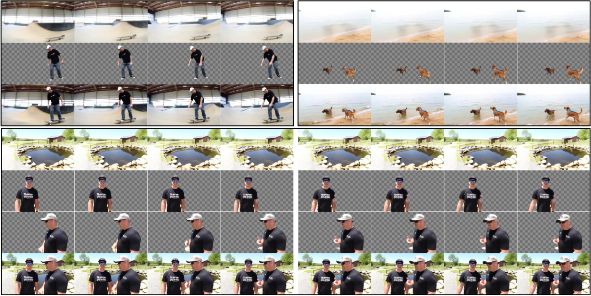
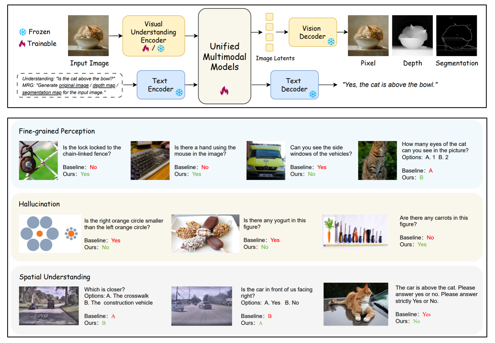
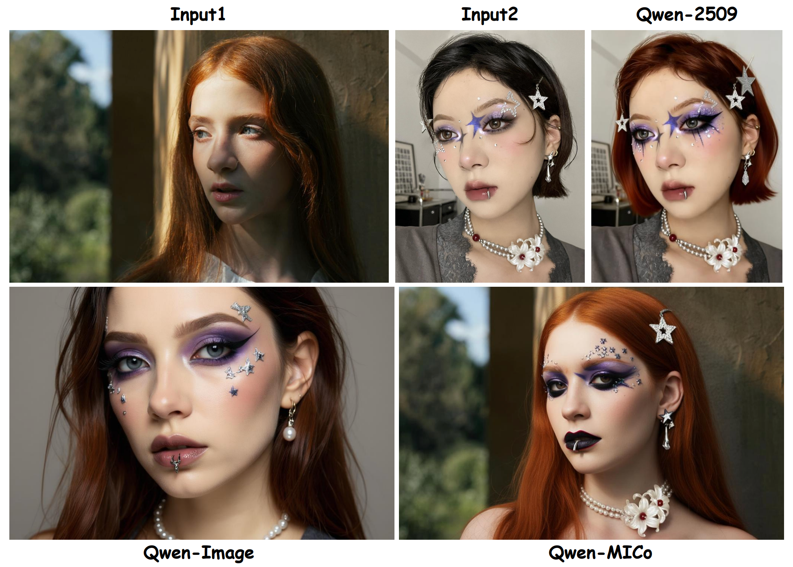
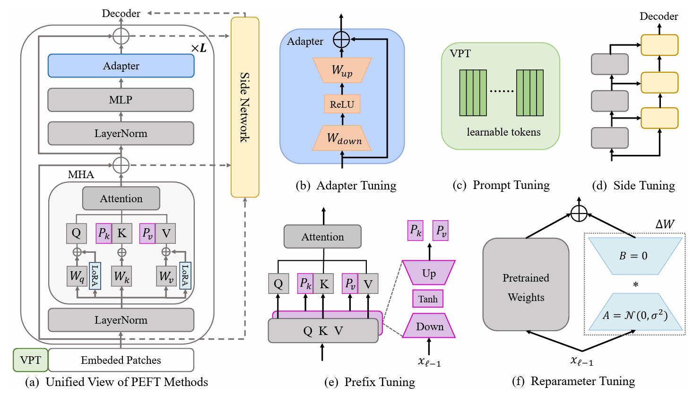
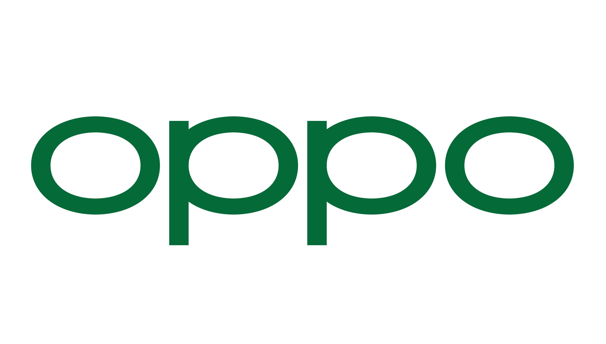
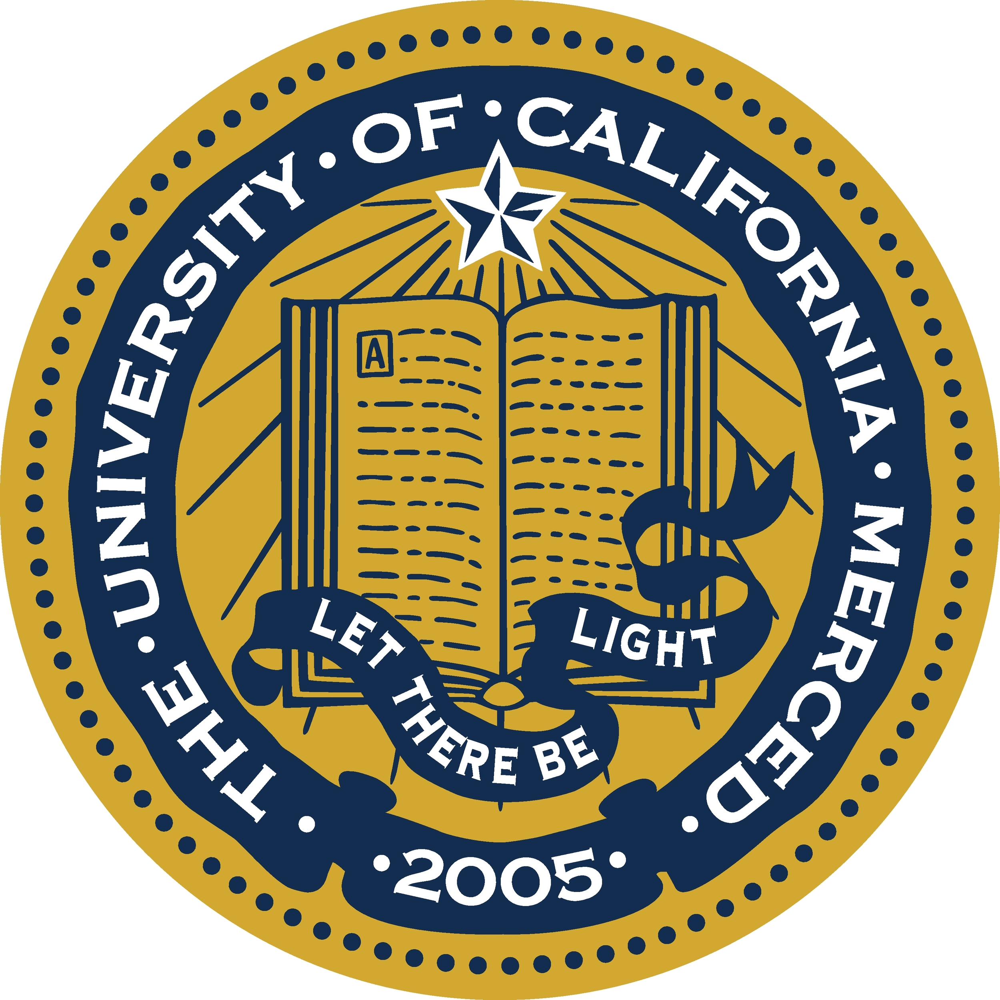

Kangrui Cen
Hi! I am currently a research intern at OPPO Research Institute, supervised by Prof. Lei Zhang. Before that, I received my Bachelor degree in Computer Science from Shanghai Jiao Tong University, where I am a member of John Hopcroft Honors Class.
Previously, I'm honored to collaborate with Prof. Ming-Hsuan Yang at UCM, Dr. Kelvin C.K. Chan at Google DeepMind, and Prof. Xiaohong Liu at SJTU.
Email / Google Scholar / Github / HuggingFace
{kind=link}
News
- [2026.02] 🎉 MICo-150K is accepted to CVPR 2026! The datasets are open-sourced!
- [2026.02] 🎓 I will start my PhD journey at The Hong Kong Polytechnic University in Sept. 2026!
- [2026.02] 🔥 We've released LayerT2V v2 on arxiv. We put forward a brand new multi-layer video representations and adopted Wan Video as our backbone.
- [2026.01] 🔥 Release UniMRG on arxiv, an effective architecture-agnostic post-training method that enhances the understanding capabilities of UMMs.
- [2025.12] 🔥 We've released MICo-150K, a large-scale dataset with identity consistency, and MICo-Bench.
- [2025.08] 🔥 Release LayerT2V on arxiv, the first approach for generating video by compositing background and foreground objects layer by layer.
- [2025.07] 🧑🏻💻 I am now a research intern at OPPO Research Institute, supervised by Prof. Lei Zhang!
- [2025.06] 🎓 I graduated from Shanghai Jiao Tong University with Bachelor of Science Degree (Computer Science, Zhiyuan Honors), as an outstanding graduate student!
Research Interests
I am broadly interested in Computer Vision, especially Image/Video Editing/Enhancement/Generation, and Vision Language Models. Creating a super-intelligent entity that is capable of seeing, drawing and thinking like humans, or even superior to humans is our mission.
Papers

Abstract
Text-to-video generation has advanced rapidly, but existing methods typically output only the final composited video and lack editable layered representations... Extensive experiments demonstrate that LayerT2V substantially outperforms prior methods in visual fidelity, temporal consistency, and cross-layer coherence.

Abstract
Unified Multimodal Models (UMMs) integrate both visual understanding and generation within a single framework. In this work, we propose UniMRG, a simple yet effective architecture-agnostic post-training method. UniMRG enhances the understanding capabilities of UMMs by incorporating auxiliary generation tasks...

Abstract
In controllable image generation, synthesizing coherent and consistent images from multiple reference inputs, i.e., Multi-Image Composition (MICo), remains a challenging problem... Our baseline model matches Qwen-Image-2509 in 3-image composition while supporting arbitrary multi-image inputs.

Abstract
Pre-trained vision models (PVMs) have demonstrated remarkable adaptability across a wide range of downstream vision tasks... This paper presents a comprehensive survey of the latest advancements in the visual PEFT field, systematically reviewing current methodologies...
Experience

Remote Collaborator
Supervisor: Dr. Kelvin C.K. Chan; Prof. Ming-Hsuan Yang

B.S. in Computer Science (Zhiyuan Honors Program, John Hopcroft Class)
Honors
- Outstanding Graduates of Shanghai Jiao Tong University, 2025
- Merit Scholarship, B Level (top 10%), SJTU, 2022, 2023
- Meritorious Winner of MCM/ICM (top 7%), 2022
- Zhiyuan Honors Scholarship (top 5%), SJTU, 2021, 2022, 2023